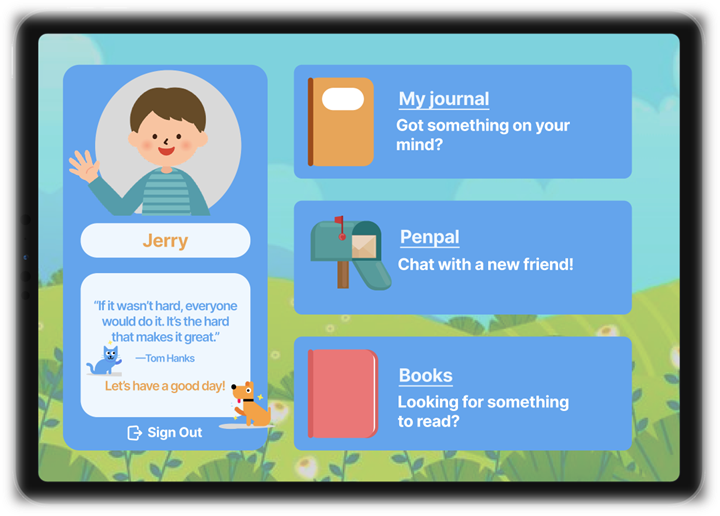
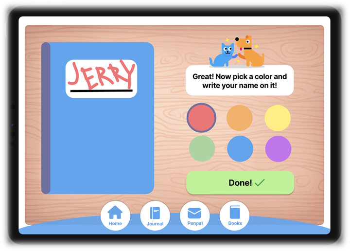
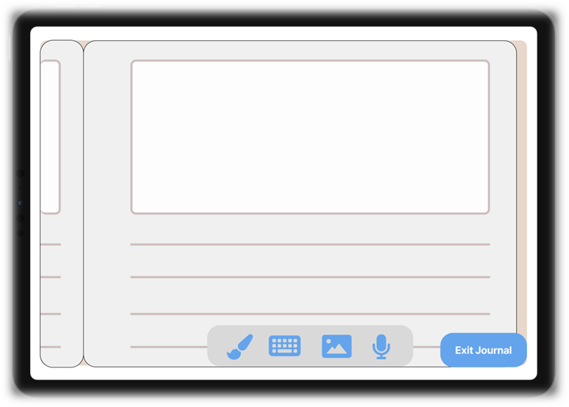
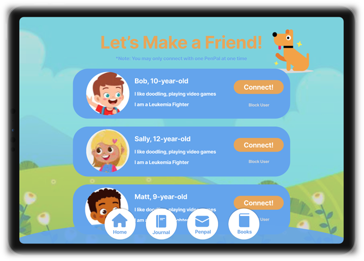
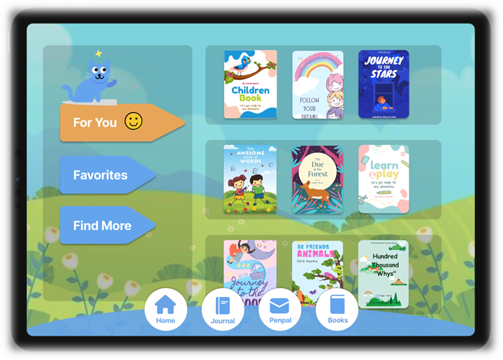

MACCI App - a tablet application for children with chronic illnesses
This wireframe was made as part of a group semester project for a course I took titled Information Systems Analysis & Design. The concept is to learn to use wireframing tools such as Figma, and to be able to apply skills such as the agile workflow in creating a product from personas, scheduling and budgeting, all the way to release. The wireframe on Figma is fully functional and tap-linked.
You can view the full-length write-up of key frames here, walk yourself through our interactive prototype below, or simply continue scrolling for a short overview!
00
Personas & Preliminary Steps
To kickoff our project, we began with research on the lives of children with chronic illnesses and tools they are currently provided with to help them manage their emotions and cope with their ailment. Following this, we were able to create our two ideal user personas as seen above. With our primary users in mind, we started up our project proposal including a summary of our mission statement, our personas, a workplan with specified time and resources, a feasibility writeup, requirements, and more.
01
Home Page

The issue that this application seeks to address is the feelings of isolation and confusion that young children with chronic illnesses often experience. In order to provide solution, this home page introduces the three main functions of the app: a private journal, a penpal method, and books that promote empathy and understanding of illnesses.
02
Journal Creation

The entire app is made with the child audience in mind and is designed to be engaging with bright colors, simple text, and two mascots that will teach the child how to use and customize the app.
03
Blank Journal Page

This is an example of the journal function of MACCI, where kids can draw, type, insert photos, or insert voice memos. Journaling helps with emotional catharsis, and not all children may feel like they have access to a private and healthy method of catharsis.
04
Penpal Search Page

Children with chronic illnesses may often feel emotions of social isolation due to the fact that other children cannot fully empathize with their experiences. As a result, the penpal function seeks to offer a way to connect children with similar experiences with illness.
05
Story Library

This page showcases the library of digital books available for the MACCI app user. A large majority of these books will be directed at lessons of perserverance and other tales of children overcoming adversity.